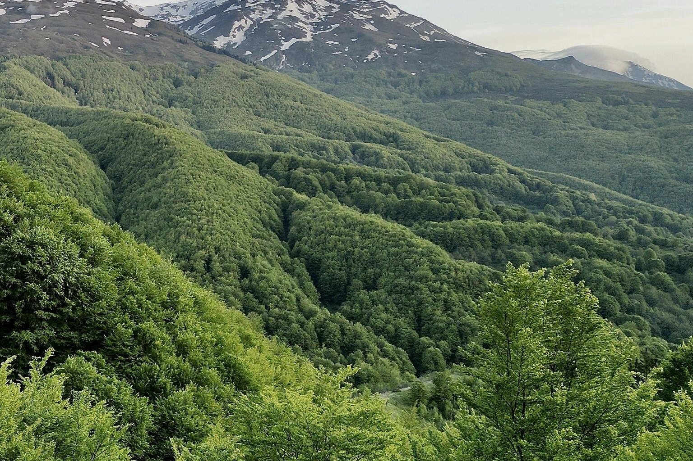
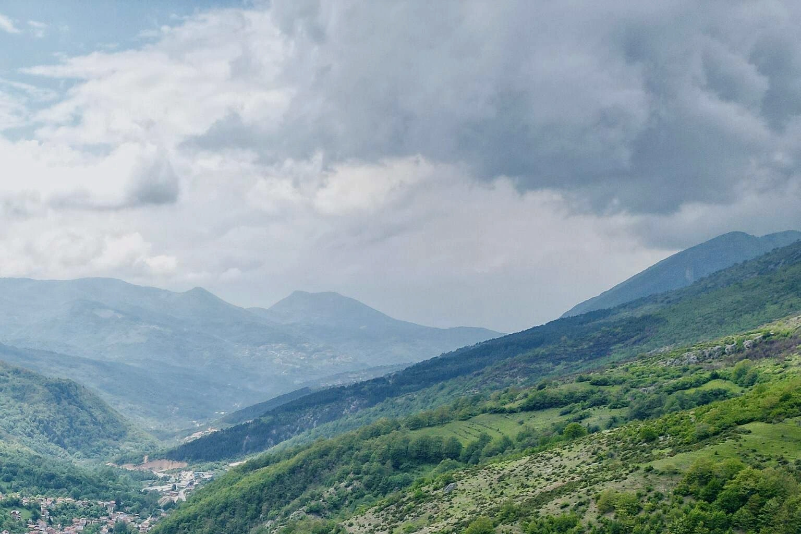
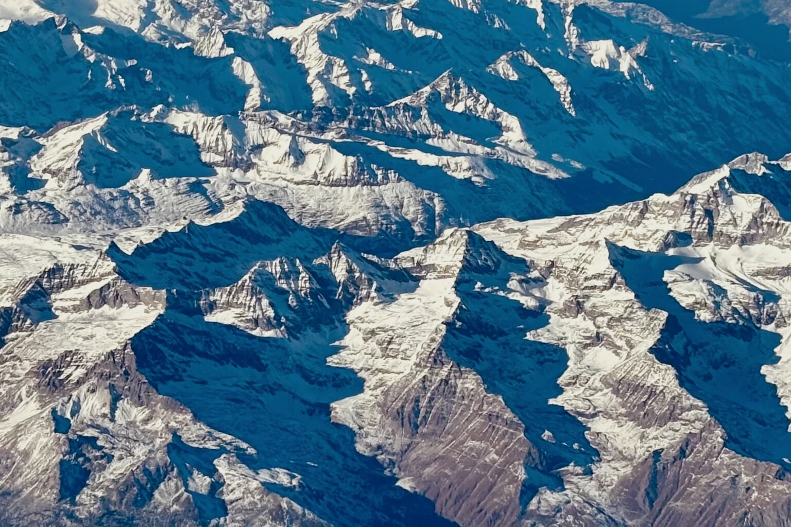
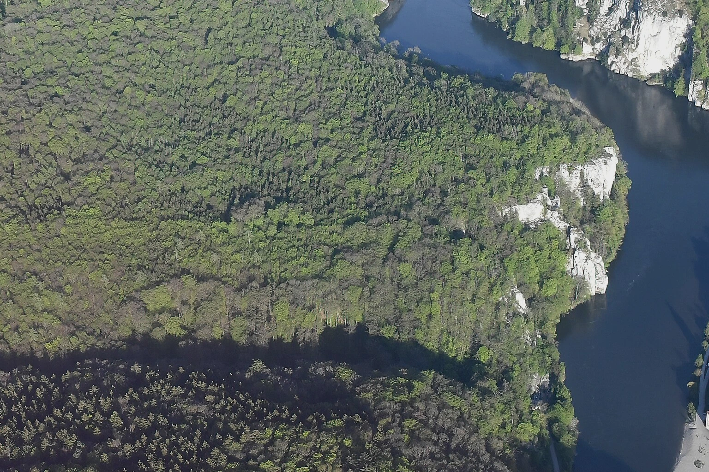
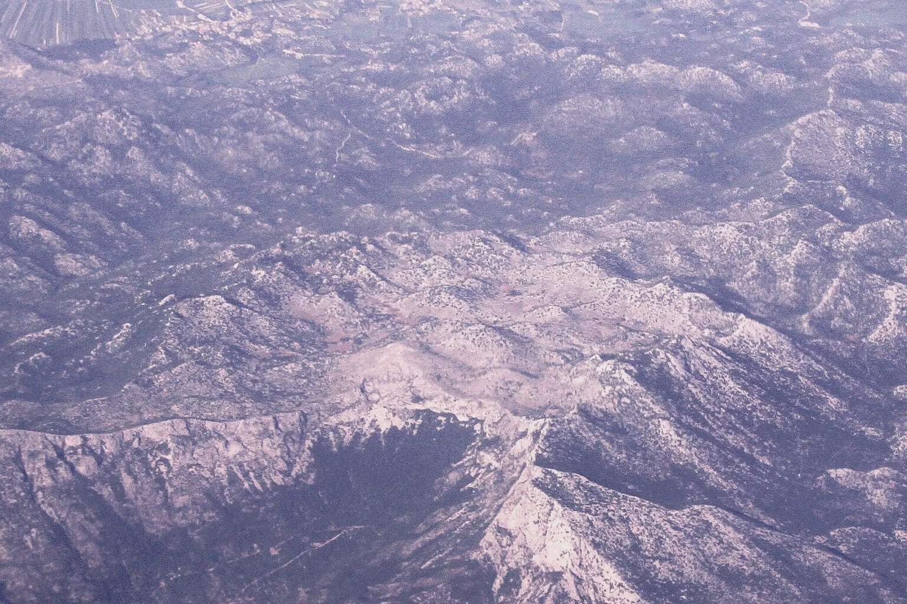

eu-09-16
Sharr limestone ridges and alpine spring meadows · Sharr Mountains, Kosovo; reference imagery, not georegistration
Photo: SUHEJLO · CC BY 4.0. Not a historical or road-certified playable tile.
Original native-resolution crops from distinct licensed sources. Regional resemblance only; not georegistered historical terrain. No invented roads, towns or conquest nodes. These are NOT finished octagons.

Sharr limestone ridges and alpine spring meadows · Sharr Mountains, Kosovo; reference imagery, not georegistration
Photo: SUHEJLO · CC BY 4.0. Not a historical or road-certified playable tile.

Sharr wooded upland slope; upper native source crop · Sharr Mountains, Kosovo; reference imagery, not georegistration
Photo: SUHEJLO · CC BY 4.0. Not a historical or road-certified playable tile.

Western Alps high ridges and valley · Mont Blanc and Aosta Valley, western Alps
Photo: Kallerna · CC BY-SA 4.0. Not a historical or road-certified playable tile.

Forested Danube limestone gorge · Danube gorge, Bavaria, Germany
Photo: Carsten Steger · CC BY-SA 4.0. Not a historical or road-certified playable tile.

Adriatic coast, limestone mountains and coastal lowlands · Dalmatian coastal mountains, Croatia
Photo: Bjoertvedt · CC BY-SA 3.0. Not a historical or road-certified playable tile.